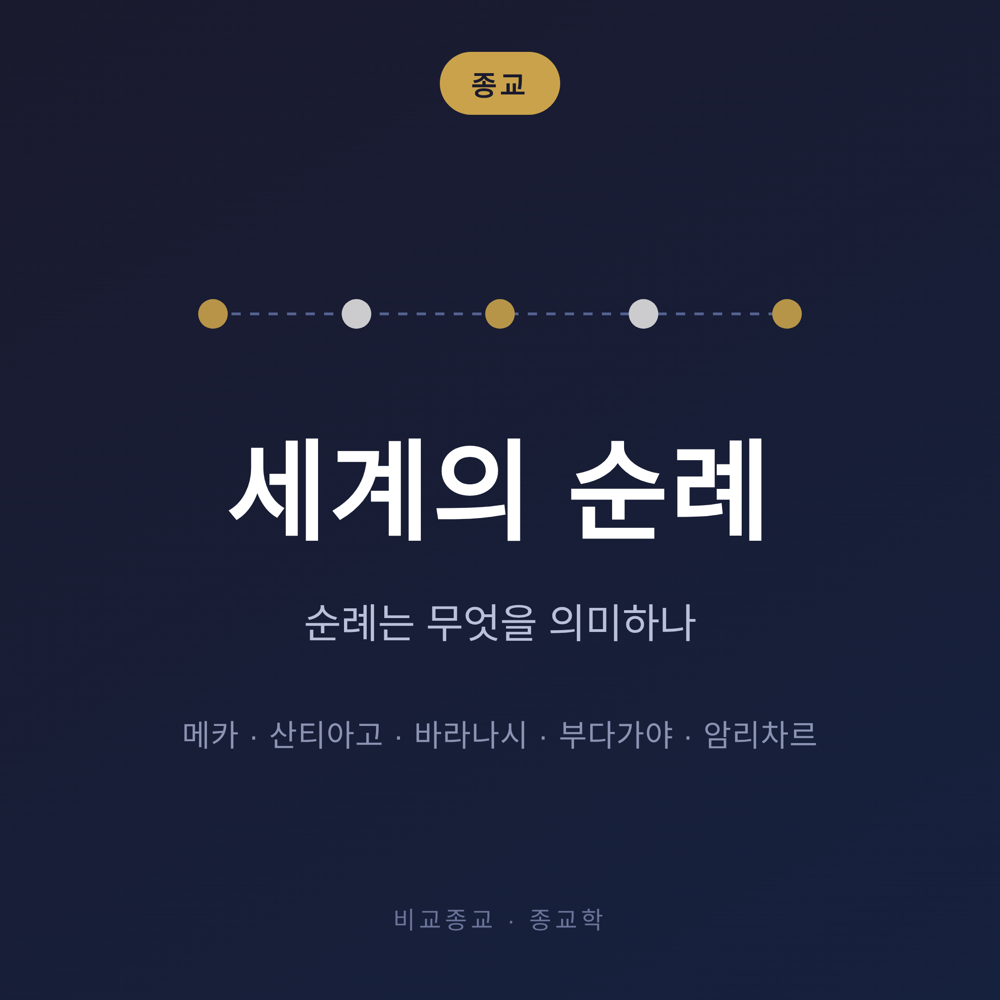
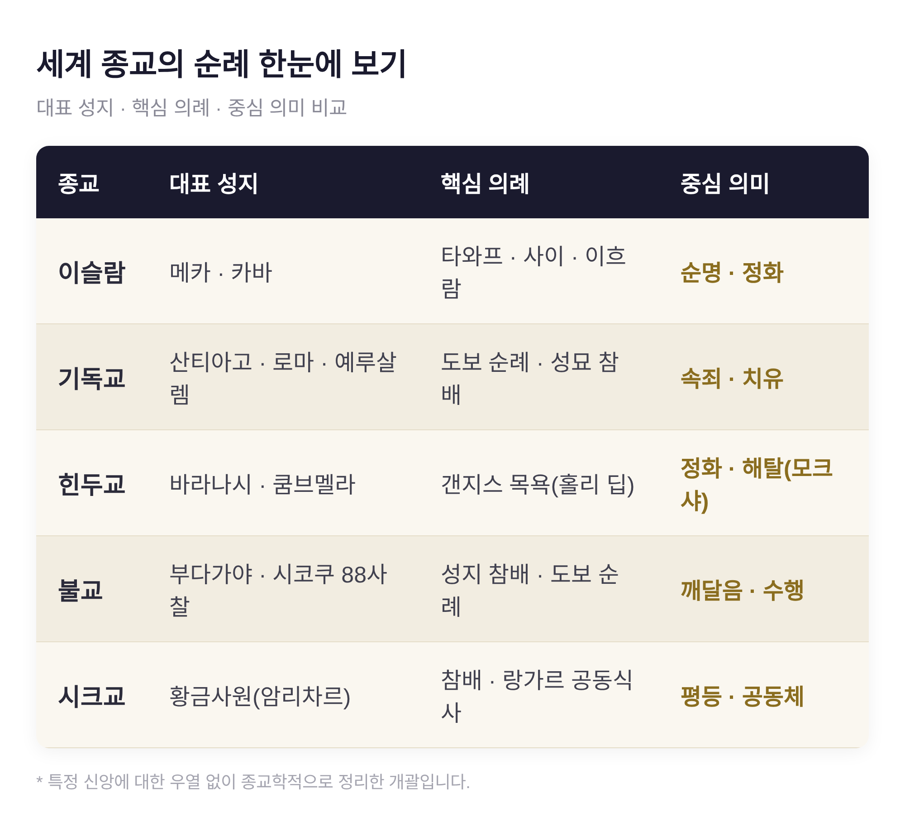
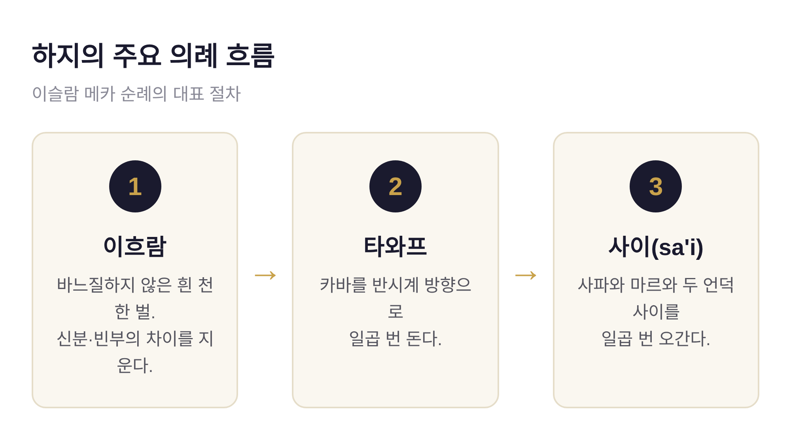
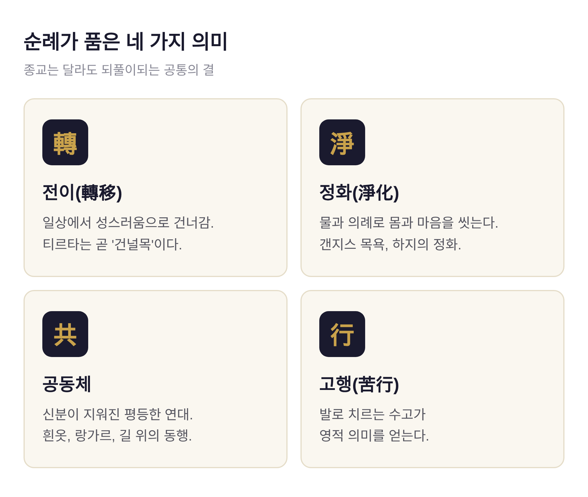
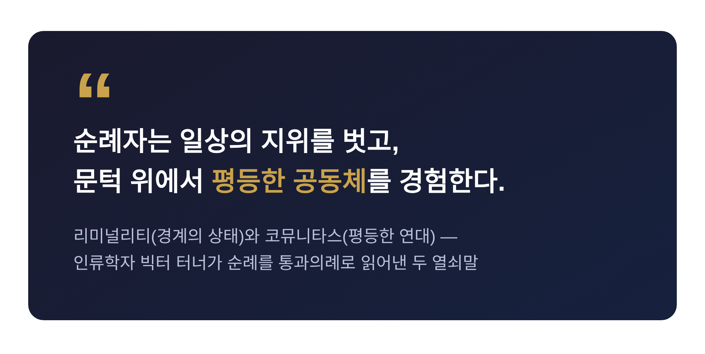

이번 글에서는 세계 종교의 순례를 한자리에 놓고 정리해 보겠습니다.
메카의 하지, 산티아고 순례길, 갠지스의 바라나시, 일본의 사국(시코쿠) 순례까지. 종교는 서로 다르지만, 사람들이 길을 떠나는 이유에는 겹치는 결이 있습니다. 이 글은 특정 신앙을 옹호하거나 비판하지 않고, 종교학의 눈으로 그 공통점을 담담히 살펴봅니다.
먼저 결론부터 말씀드리면 이렇습니다. 순례는 대개 네 가지를 품고 있습니다. 일상에서 성스러움으로의 전이, 몸과 마음을 씻는 정화, 신분이 지워진 공동체, 그리고 발로 치르는 고행입니다.
순례는 영적인 동기로 떠나는 여정입니다. 신이나 성인, 성지와 연결된 특정 장소를 향합니다.
흥미로운 것은 힌두교가 순례를 부르는 말입니다. 순례지를 티르타(tirtha)라 하는데, 이 말은 "여울" 또는 "건널목"을 뜻합니다. 성지는 세속의 세계에서 신성으로 건너가는 나루터인 셈입니다.
여기에 순례의 핵심이 담겨 있습니다. 몸이 물리적으로 이동하는 일이, 곧 영혼이 한 상태에서 다른 상태로 건너가는 일을 상징합니다. 예전엔 그저 먼 길을 걷는 고생이었다면, 지금도 그 걸음은 여전히 "건넘"의 의미를 지닙니다.
이런 순례는 기독교·이슬람·힌두교·불교를 가리지 않고 나타납니다. 종교가 달라도 사람은 비슷한 이유로 길을 떠납니다.

하지(Hajj)는 이슬람의 다섯 기둥 중 하나입니다. 신앙고백, 하루 다섯 번의 기도, 라마단 단식, 의무적 자선에 이어 다섯 번째 기둥입니다. 몸과 형편이 허락하는 무슬림은 일생에 한 번 이 순례를 수행합니다.
의례는 상징으로 가득합니다.
순례자는 이흐람이라는, 바느질하지 않은 흰 천 한 벌을 걸칩니다. 이 옷 앞에서는 부자와 가난한 자, 왕과 백성의 구분이 지워집니다. 그리고 무슬림의 기도 방향인 카바(Kaaba)를 반시계 방향으로 일곱 번 돕니다. 이를 타와프라 합니다. 두 언덕 사파와 마르와 사이를 일곱 번 오가는 사이(sa'i)도 이어집니다.
규모는 압도적입니다. 2024년 하지에는 사우디 공식 통계로 약 183만 명이 모였습니다. 집계 방식에 따라 240만 명이 넘었다는 보도도 있습니다. 전 세계 무슬림 수백만 명이 같은 주간, 같은 도시로 동시에 모여드는 것입니다.

기독교 순례는 4세기에 본격화됩니다. 콘스탄티누스 대제가 예루살렘에 여러 교회와 성소를 지었고, 그 어머니 헬레나가 순례를 장려했습니다. 예수의 생애와 얽힌 성지, 특히 성묘 교회가 중심이 되었습니다.
이후 로마가 또 다른 순례의 중심으로 떠오릅니다. 성 베드로와 성 바오로의 무덤이 있고, 수많은 성유물이 안치되어 있었기 때문입니다. 11세기 유럽에서는 로마, 산티아고, 예루살렘이 세 대(大) 순례지로 꼽혔습니다.
중세 사람들이 길을 떠난 이유는 소박하면서도 절실했습니다. 죄에 대한 속죄, 병의 치유, 그리고 신앙심의 표현이었습니다.
오늘날 가장 널리 걸리는 길은 산티아고 순례길(Camino de Santiago)입니다. 사도 성 야고보의 유해가 있다고 전해지는 스페인 북서부로 향하는 길로, 9세기부터 이어져 왔습니다.
2024년에는 기록이 새로 쓰였습니다. 콤포스텔라 증서를 받은 순례자가 49만 9,239명으로 역대 최고를 찍었습니다. 완주자의 3분의 1 정도만 증서를 신청한다는 점을 감안하면, 실제로는 150만 명 이상이 이 길을 걸었을 것으로 추정됩니다. 처음으로 외국인이 스페인인을 앞질렀고, 그중 미국인이 가장 많았습니다. 93%가 두 발로 완주했습니다.
힌두교 순례의 상징은 바라나시(카시)입니다. 세계에서 가장 오래 사람이 살아온 도시 중 하나이자, 시바 신의 도시로 여겨집니다.
이곳은 삶보다 죽음으로 더 유명합니다. 힌두교도는 바라나시에서 죽어 화장되면 모크샤, 곧 윤회의 굴레에서 벗어나는 해탈을 얻는다고 믿습니다. 세계 최대 화장터로 알려진 마니카르니카 가트에서는 하루 평균 약 350구, 많을 때는 그 이상이 화장된다고 전해집니다. 순례자들은 갠지스 강에 몸을 담가 자신을 씻습니다.
정화의 힘을 가장 크게 보여주는 것은 쿰브멜라(Kumbh Mela)입니다. 성스러운 강에서의 목욕이 구원의 가치를 지닌다는 믿음 위에 서 있습니다. 특히 144년에 한 번 돌아오는 조건의 해에는 마하 쿰브멜라라 부릅니다.
2025년 프라야그라지의 마하 쿰브멜라에는 약 6억 6천만 명이 다녀간 것으로 집계됩니다. 세 강이 만나는 곳에서 성스러운 목욕을 하려는 인파였습니다. 인류가 한자리에 모이는 가장 큰 사건의 하나입니다.
다만 이런 초대형 군집의 수치는 추산 방법에 따라 편차가 크다는 점은 염두에 두시는 편이 좋겠습니다.
불교의 순례는 붓다의 생애를 따라 걷습니다. 붓다 자신이 순례할 만한 곳으로 네 곳을 지목했다고 전해집니다.
붓다는 이 네 곳이 신자에게 "영적인 절박함"을 불러일으킨다고 말했습니다. 탄생·깨달음·가르침·죽음이라는 한 생애의 매듭을 발로 밟아보게 하는 것입니다.
동아시아로 눈을 돌리면 일본의 사국 순례(시코쿠 헨로)가 있습니다. 시코쿠 섬의 88개 사찰을 잇는 길로, 전체 1,130km에 이릅니다. 한때는 일본 불교도의 순례였지만, 지금은 영적 수행과 신체적 도전이 어우러진 길로 세계 각지의 순례자를 불러 모읍니다.
시크교 최고의 순례지는 암리차르의 황금사원(하르만디르 사히브)입니다. 1577년 제4대 구루 람 다스가 세웠고, "감로의 못"이라 불리는 연못 한가운데 섬에 자리합니다.
이 사원이 전하는 메시지는 분명합니다. 건물에는 동서남북 네 개의 문이 있습니다. 모든 카스트와 종교, 인종에게 열려 있다는 뜻입니다. 신 앞에서 모두가 형제자매라는 선언입니다.
그 정신은 부엌에서 가장 잘 드러납니다. 이곳의 공동 부엌 랑가르는 누구에게나 하루 약 10만 끼의 채식을 무료로 내어줍니다. 신분을 묻지 않고 한 바닥에 앉아 같은 밥을 먹는 자리. 순례의 평등이 밥상 위에서 실현됩니다.

종교는 이렇게 다른데, 순례의 풍경은 왜 이토록 닮았을까요.
인류학자 빅터 터너는 순례를 하나의 통과의례로 보았습니다. 그가 남긴 두 개념이 실마리가 됩니다.
하나는 리미널리티(liminality), 곧 "사이의 상태"입니다. 순례자는 집을 떠나는 순간, 평소의 사회적 역할과 지위에서 잠시 벗어납니다. 나이도 직업도 계급도 흐릿해지는 문턱에 서는 것입니다.
다른 하나는 코뮤니타스(communitas)입니다. 그 문턱 위에서 낯선 이들 사이에 평등과 연대의 감정이 피어납니다. 흰옷을 입은 하지 순례자들, 한 밥상에 앉은 황금사원의 사람들, 같은 길을 걷는 카미노의 동행들처럼 말입니다.

물론 순례가 늘 조화롭기만 한 것은 아닙니다. 그 안에는 경쟁과 차이, 상업화도 함께 있습니다. 학자들은 터너의 그림이 지나치게 이상적이라고 보완하기도 했습니다. 하나의 이론으로 모든 순례를 설명할 수는 없습니다.
그럼에도 네 가지 결은 자주 되풀이됩니다. 일상에서 성스러움으로 건너가는 전이, 물과 의례로 씻는 정화, 신분이 지워지는 공동체, 그리고 몸으로 치르는 고행입니다.
정리하면 이렇습니다.
순례는 목적지에 관한 이야기이면서, 동시에 걷는 사람에 관한 이야기입니다. 어느 신을 향하든, 사람은 길 위에서 자기 자신을 다시 통과하는 듯합니다.
"떠나서 다른 사람이 되어 돌아오는 일"
순례가 오래도록 사라지지 않는 이유는 여기에 있는지도 모릅니다. 당신에게도 언젠가 건너야 할 나루터가 있다면, 그 길은 반드시 종교의 이름을 달고 있지 않아도 좋을 것입니다.